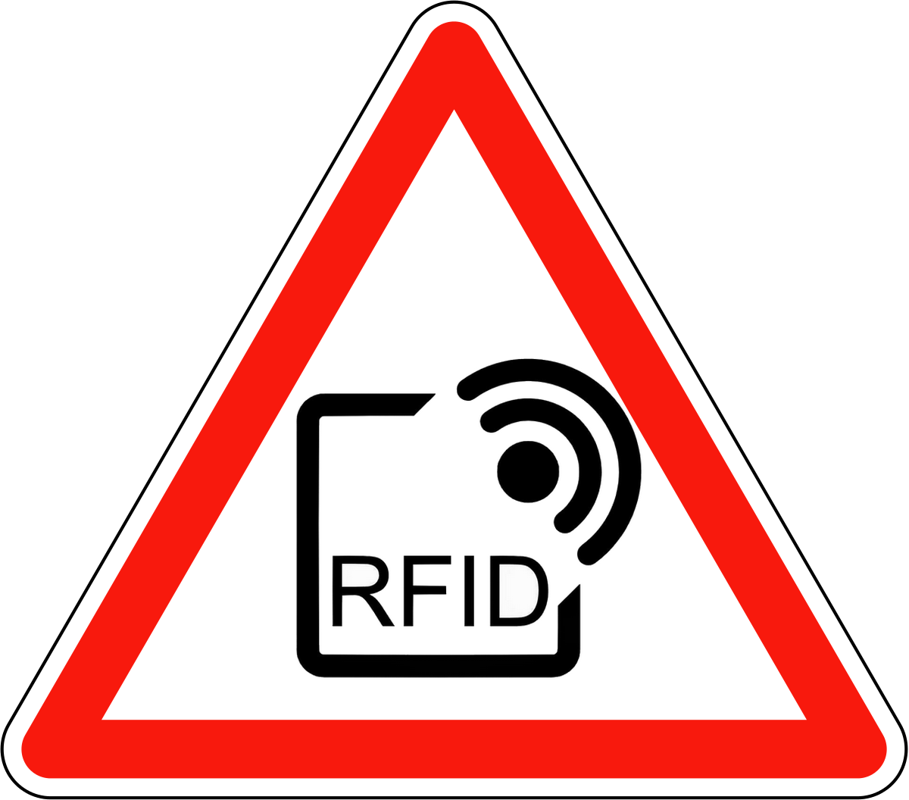

Des milliers de personnes ont accepté de se faire implanter une puce RFID sous la peau, de ce fait ces personnes peuvent accéder au bâtiment de leur entreprise, payer le restaurant d’entreprise, prendre le train... Soit, en quelques mots, simplifier certains usages quotidiens. La technologie RFID ne cesse donc d’évoluer, de se renouveler pour aller jusqu’à s’implanter sous la peau des utilisateurs. Les RFID sous cutanées sont-ils la technologie incontournable de demain ? Commerce, soins, accès aux entreprises, circulation routière et transports en commun sont autant de choses essentielles représentant les indispensables de la vie en société. Avec la démocratisation de l’utilisation du RFID se pose la question du choix des particuliers et des entreprises à l’avenir. Sera-t-on capables de renoncer à l’utilisation massive des RFID ? Cette technologie est-elle vouée à remplacer, à terme, les moyens de paiements physiques ? Ces questions ne sont toutefois, pour le moment, pas d’actualité dans le monde entier. C’est par exemple le cas de l’Allemagne, où plus de 47% des paiements se font en monnaie fiduciaire et ou la population reste très attachée au paiement en espèce et se « méfie » de cette technologie. Même si nous avons pu observer que la Suède se veut pionnière dans ce domaine, une majorité de pays ne semblent pas prêts à franchir ce pas et se soucient davantage de la protection des données personnelles de leurs citoyens plutôt que de se rendre dépendant de cette technologie.
Les RFID sous cutanées sont-ils la technologie incontournable de demain ? Commerce, soins, accès aux entreprises, circulation routière et transports en commun sont autant de choses essentielles représentant les indispensables de la vie en société. Avec la démocratisation de l’utilisation du RFID se pose la question du choix des particuliers et des entreprises à l’avenir. Sera-t-on capables de renoncer à l’utilisation massive des RFID ? Cette technologie est-elle vouée à remplacer, à terme, les moyens de paiements physiques ?
Ces questions ne sont toutefois, pour le moment, pas d’actualité dans le monde entier. C’est par exemple le cas de l’Allemagne, où plus de 47% des paiements se font en monnaie fiduciaire et ou la population reste très attachée au paiement en espèce et se « méfie » de cette technologie. Même si nous avons pu observer que la Suède se veut pionnière dans ce domaine, une majorité de pays ne semblent pas prêts à franchir ce pas et se soucient davantage de la protection des données personnelles de leurs citoyens plutôt que de se rendre dépendant de cette technologie.